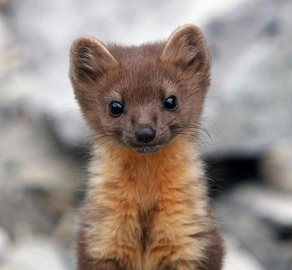
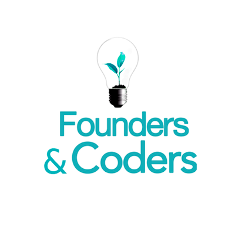

2012 - 2015 At university I studied Natural Sciences focusing on animals and their ecology and behaviour.
My favourite animal is the European Pine Marten.
2016 - Present After university I got a job in finance, and for 2 years have been building highly elaborate spreadsheets.
The best function I have written in excel is one that returns multiple matches, output into consecutive cells, without using an array formula.
I discovered web programming in June 2017 and realised it's actually the best thing ever. It utilises my problem solving skills and creative impulses and I'm totally addicted. I have been learning front end development techniques on treehouse (and now freeCodeCamp) since June.
The thing that excites me most about Founders and Coders is the focus on JavaScript in the back end as well as the front end - it's the future!
Before I started spending all of my free time coding and reading cool articles about tech, I enjoyed cooking, crafting, looking at photos of cute dogs and going for walks.
I still do that sometimes.